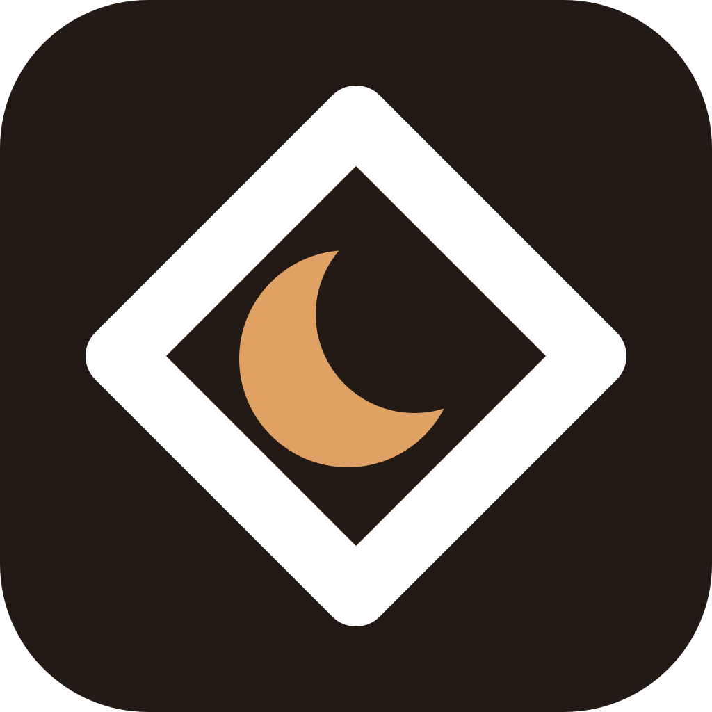
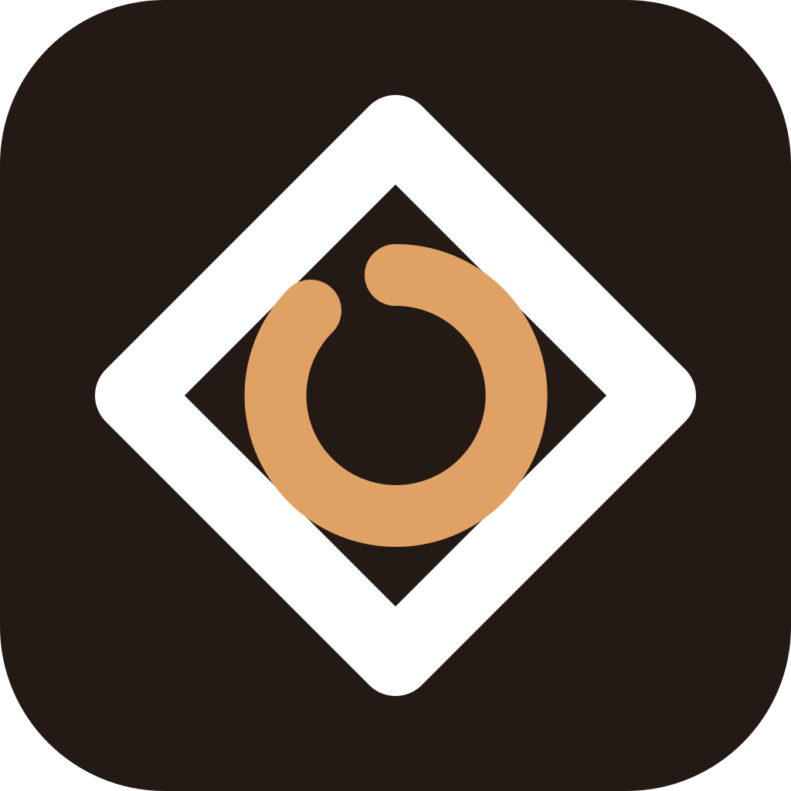
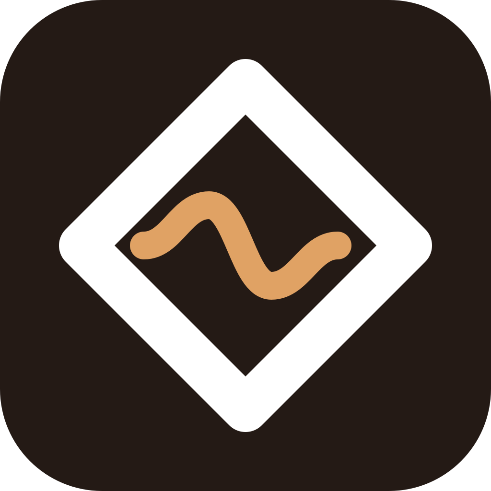
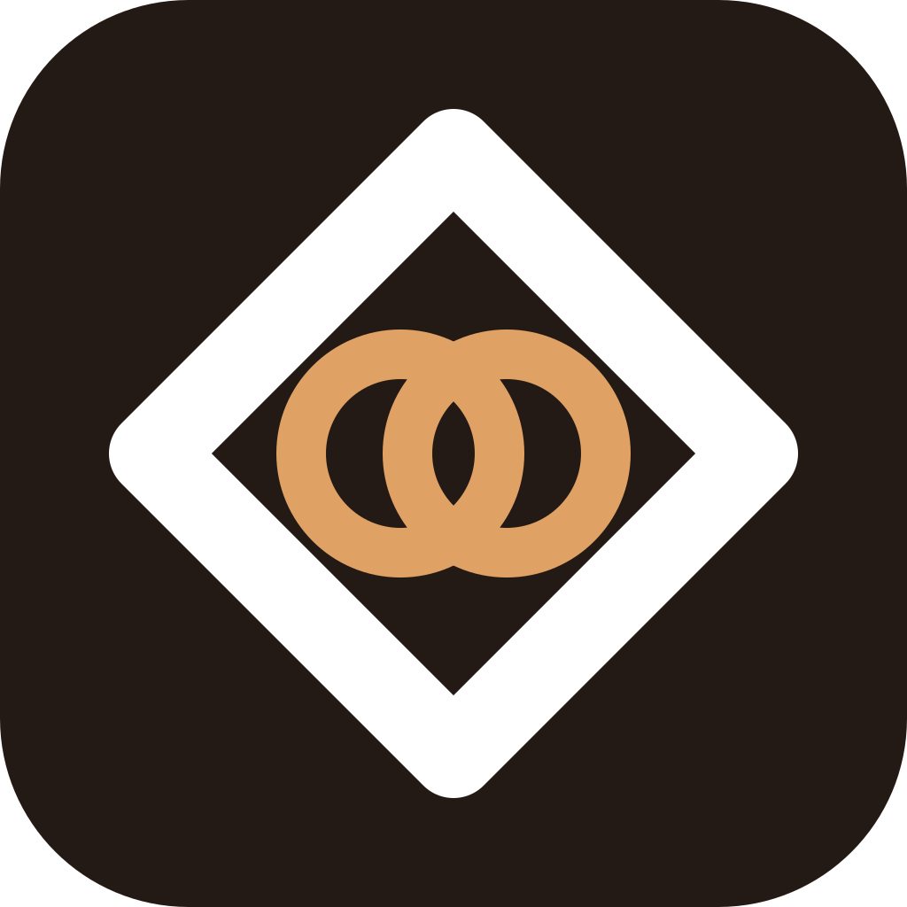

Одна грамматика с AsbestosGuard и Gymbar: сплошная плитка · белый ромб (штрих 96 / 1024) · один акцентный знак внутри. Своё — тёплый тёмный фон #241A15 и янтарь #E0A264 из ночной темы приложения.

AsbestosGuard

Gymbar
→
Слева — уже существующие члены семьи. Третья плитка показывает, что новая иконка встаёт в тот же ряд, а не рядом с ним.
A · Ребёнок в ромбе
Малый ромб внутри большого: ребёнок под опекой. Самое прямое продолжение семьи, лучше всех живёт в 28 px.

B · Месяц
Полумесяц — ночь, сон, сказка на ночь. Единственный вариант, где виден характер продукта, а не только геометрия.

C · Год за руку
Незамкнутая дуга — путь по неделям, ядро приложения. Разрыв читается как «ещё идём».

D · Ритм
Волна сна и кормления — вкладка «Ритм». Дыхание, а не диаграмма. Самый мягкий из пяти.

E · Вместе
Два сцепленных кольца — родитель и ребёнок, буквально «за руку». Самый плотный: в 28 px кольца начинают слипаться.